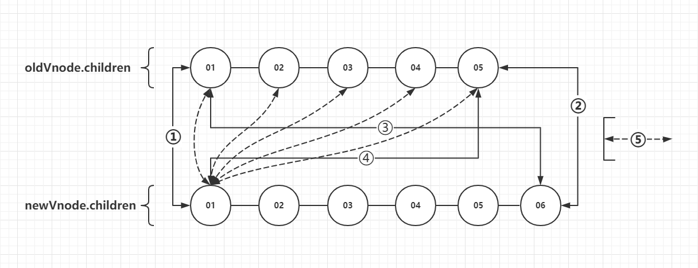

vue中的diff算法实现
大纲
前言
vue版本：2.6.10
每次更新视图前都会根据视图模板生成vnode（虚拟的节点树），vnode类似dom树，但更简陋，每个vnode都与页面的上的元素html元素一一对应！为了更好的性能，因此要复用元素。那么就要知道怎么复用！就要对比newVnode（当前生成的vnode）和oldVnode（上次生成的vnode），对比完之后才知道那些是要删除，那些是需要重新创建，那些需要移动、移动到哪里！？
而diff算法则是对比的一种比较好的方式，更好的更快地对比，谁被谁复用！
newVnode和oldVnode的比对仅限于同层级之间对比，兄弟之间相互比较，如下图。不会出现跨层级的对比。

diff算法是什么
diff算法不是一种对比的方法，而是一种寻找与当前节点匹配可复用节点的方法；寻找oldVnode.children中那个成员与newVnode.children中那个成员相同。
这种寻找的方法如图可见一斑，主要的方法有5种，辅助的有2种（未画在图上），一共7种。每种寻找方式相互独立！通过循环遍历children，逐一判断，直到循环结束。下面结合代码分别说明其中寻找方式。
ps：无需过于在意图中所表达的逻辑，图只是用于辅助说明下面的源码
1 | function updateChildren ( |
建立四个指针oldStartVnode、oldEndVnode、newStartVnode、newEndVnode，由updateChildren中的定义可以知道：开始时，他们分别指向oldVnode.children的头部、oldVnode.children的尾部、newVnode.children的头部、newVnode.children的尾部。然后，这四个指针的指向也不是固定的，在循环遍历的过程中，他们的指向也会变动，他们指向会因为以下索引的变动而变动，oldStartIdx、oldEndIdx、newStartIdx、newEndIdx。
1.新头与旧头垂直对比
新旧头部vnode进行对比，判断是否匹配，以复用。sameVnode的功能与实现逻辑参考附录：sameVnode的功能与实现逻辑，值得一提的是：a.是input元素，更新前后type不一致；b.变动的是key属性；c.元素更新前后将所有属性删除，或从无到有；只要不是以上三种情况之一，不论怎么增删、修改元素上的属性，都不会影响是否匹配的结果！
1.判断新旧头部是匹配的，那么就调用patchVnode，给newStartVnode打补丁！
patchVnode函数的主要功能：
a. 复用elm，将oldVnode.elm赋值到newVnode.elm；
b. 更新elm上的属性变动；
c. 更新newVnode.children，增删或复用，这里的复用就是通过调用updateChildren来实现，没错递归了！
patchVnode函数的主要功能参考：附录：patchVnode函数的关键实现
2.分别右移oldStartVnode和newStartVnode。
1 | function updateChildren (/* */) { |
2.新尾与旧尾垂直对比
新旧尾部的对比情况和[1新头与旧头垂直对比]类似，再次再累累述，以下实现的逻辑：
1 | function updateChildren (/* */) { |
3.新尾与旧头交叉对比

当前情况与[1新头与旧头垂直对比]略有不同！看源码中，多出了下面这句：
1 | canMove && nodeOps.insertBefore(parentElm, oldStartVnode.elm, nodeOps.nextSibling(oldEndVnode.elm)) |
这句代码实现就是图片中移动elm的功能！为什么要移动elm？因为newEndVnode复用了oldStartVnode.elm，复用这一步已经由patchVnode函数实现，然后还需要让elm列的顺序与newVnode的顺序保持一致，所以需要将oldStartVnode.elm移动到正确的位置！
1 | function updateChildren (/* */) { |
4.新头与旧尾交叉对比
当前情况与[新尾与旧头交叉对比]类似，不做赘述！配合图片和源码食用口味更佳~
1 | function updateChildren (/* */) { |
5.当前新vnode与旧头尾之间的vnode对比
在本次循环中，前4种控制流都没有进入，就说明一头一尾、两次交叉对比都没有找到可复用的节点！但这并非代表旧children中无可复用，因为头与尾之间的元素还没有比对过，第5种方式即是如此！这第5种方式在有定义key(v-for指令中的key)或没有的情况下又是不同的表现！
注意：在此情况下，是用新头去旧children的头尾之间寻找可复用元素
5-1.构建oldCildren映射表(key => idx)
从oldChildren构建一个映射表(key => idx)，这样就可以通过key，结合这个映射表快速找到匹配的可复用的元素。时间复杂度就是O(1)！
1 | function updateChildren (/* */) { |
createKeyToOldIdx的实现：
1 | function createKeyToOldIdx (children, beginIdx, endIdx) { |
5-2.根据5-1的映射表找到可复用vnode的索引
列表渲染中不一定会定义key，如果没有定义那么5-1的映射表就没有用了。那么就需要遍历旧children节点寻找与新头匹配的元素（详见下面代码的findIdxInOld方法）！那么时间复杂度就上来了，不再是使用映射表时的O(1)，而是O(n)。由此也可以知道使用key的性能优化优越之所在！
1 | function updateChildren (/* */) { |
findIdxInOld：时间复杂度O(n)
1 | function findIdxInOld (node, oldCh, start, end) { |
5-3.无可复用旧元素
在旧children可能会找到也可能找不到可复用的元素，没有找到是什么情况？如图：

假如现在newStartVnode指向的是key = 1.5的vnode，那么很明显旧children中就没有可以复用的vnode，那么需要做的就是：a.创建一个与newStartVnode对应的newElm(新的真实html元素)；b.然后将newElm插入到旧children中key=02的vnode对应的真实元素的前面！
1 | function updateChildren (/* */) { |
5-4.复用旧元素
5-3和5-4是互斥的，进入5-4控制流就表示5-2中返回的idxInOld不为空，旧children中存在这匹配的vnode。虽然存在可用的vnode，但如果key并不可信呢？比如v-for="(item, index) in items"中的索引被用作key！！！因此有了下面的5-4-1和5-4-2。
5-4-1.确实可复用
使用sameVnode方法二次确认vnodeToMove（在旧children中找到的vnode）时可用的！接下就是类似的操作。但比较明显的不同是：其他都是递增或递减新旧索引，但在5-4-1中则是递增newStartIdx，然后旧vnode置为null(oldCh[idxInOld] = undefined)，这是设计的巧妙之处，当前还没有感受到，再看下-1.跳过左边已经复用的vnode和0.跳过右边已经复用的vnode中的内容就会豁然开朗！
1 | function updateChildren (/* */) { |
5-4-2.虚假的可复用
5-4-1与5-4-2是互斥的，既然没有元素可以复用到newStartVnode中，那么只能像5-3中那样创建与newStartVnode对应的html元素！！！
1 | function updateChildren (/* */) { |
-1.跳过左边已经复用的vnode
我们知道oldStartVnode这个指针是不断地右移，从下面的代码中的isUndef(oldStartVnode)知道，一旦碰到未定的vnode就会右移一个单位，继续循环比对后面的vnode。为什么会有未定义的vnode？正常来说应该存在，因为vnode都是与页面上的html元素一一对应的！在5-4-1.确实可复用中，vue确实地将旧children中存在可复用elm的vnode手动置为了undefined：oldCh[idxInOld] = undefined！为什么置空不直接用delete操作符删除？！删了就换了idx顺序！！
1 | function updateChildren (/* */) { |
0.跳过右边已经复用的vnode
1 | function updateChildren (/* */) { |
while中的控制流顺序
上面为了突出重点去讲，没有按while中控制流的顺序书写，以下是while块总各控制流的顺序：
1 | while (oldStartIdx <= oldEndIdx && newStartIdx <= newEndIdx) { |
while之外
留意while的循环条件：oldStartIdx <= oldEndIdx && newStartIdx <= newEndIdx，只要oldStartIdx大于oldEndIdx或newStartIdx大于newEndIdx就会结束循环！换言之，只要遍历完新旧children任意一个就会结束循环！
a. 先遍历完旧children就说明新children新增了vnode，那么就要创建与这些vnodes对应的elm；
b. 先遍历完新children就说明新children删除了一些vnode，那么就要删除多出的vnodes。
1 | if (oldStartIdx > oldEndIdx) { |
因为在循环遍历children的时候，startIdx（newStartIdx或oldStartIdx）和endIdx分别会向左和右移动。下面是四个索引移动的情况：
newStartIdx右移：1.新头与旧头垂直对比、4.新头与旧尾交叉对比、5.当前新vnode与旧头尾之间的vnode对比；
newEndIdx左移：2.新尾与旧尾垂直对比、3.新尾与旧头交叉对比；
oldStartIdx右移：-1.跳过左边已经复用的vnode、1.新头与旧头垂直对比、3.新尾与旧头交叉对比；
ildEndIdx左移：0.跳过右边已经复用的vnode、2.新尾与旧尾垂直对比、4.新头与旧尾交叉对比；
新children新增了vnode
根据newStartIdx和newEndIdx的移动情况
1.newStartIdx一直右移，由于新增的vnode都在后面，可以复用的vnode都在前面了，newEndIdx会保持不变，直到遍历完旧children：
2.newStartIdx右移，newEndIdx左移，直到遍历完旧children：

3.新增的vnode都在前面了，由于是新的节点所以存在“newStartIdx右移”的情况，newStartIdx就保持不变了，而可复用的vnode在右边，随着一次次循环，newEndIdx则会左移：
新children删除了vnode的情况就不赘述，情况可以从上面的解析类推！
新旧vnode与真实元素elm的关系
vnode是和elm一一对应的，vnode的顺序和elm保持这一致，vnode上的属性也是与对应的elm的属性对应。所以，在patch（给oldVnode打补丁）前，可以认为oldVnode树与页面上elm树是对应的！
1.oldVnode.children中vnode的顺序和oldVnode.elm.children(oldVnode对应的elm的子元素列表)的顺序是保持一致的、elm上的属性也是保持一致；
2.diff算法通过对比oldVnode.children与newVnode.children的vnode，找到可以复用的elm，并改变elm的位置，使之与newVnode.children的顺序保持一致！
diff的特点
- 先垂直，再交叉，最后中间找，diff在旧vnode.children找可复用vnode，所用比对方式的优先级！
- 只与同级vnode中寻找复用的elm，由上面的分析可以知道，只会在同级的children中寻找可以复用的vnode。但现实是可以复用的元素可以存在于dom树任意的地方，明显这样是可能回错过实际存在的复用元素，而重新创建元素！这里就是vue或diff的权衡的地方，是不计代价全局去找最优解，还是如当前这般在同级节点中寻找！？
- 定义key属性可以大幅度减少操作数，在5.当前新vnode与旧头尾之间的vnode对比中，在定义了key的情况下，会创建一个映射表
oldKeyToIdx，通过映射表可以快速找到可复用vnode，而没有定义的话，就需要遍历oldVnode.children，逐一使用sameVnode比对！
实用主义
1.新头与旧头垂直对比、2.新尾与旧尾垂直对比、3.新尾与旧头交叉对比、4.新头与旧尾交叉对比，以上四种不论是否定义元素属性key
- 定义了，可以快速判断出不相同（但不完全可靠）
使用遍历索引作为key，
它也可以用于强制替换元素/组件而不是重复使用它。当你遇到如下场景时它可能会很有用：
完整地触发组件的生命周期钩子
触发过渡
diff算法默认使用“就地复用”的策略，是一个首尾交叉对比的过程。
用index作为key和不加key是一样的，都采用“就地复用”的策略
“就地复用”的策略，只适用于不依赖子组件状态或临时 DOM 状态 (例如：表单输入值) 的列表渲染输出。
将与元素唯一对应的值作为key，可以最大化利用dom节点，提升性能
附录
sameVnode的功能与实现逻辑
1 | function sameVnode (a, b) { |
patchVnode函数的关键实现
1 | function patchVnode (/* */) { |
nodeOps.insertBefore实现
path: src/platforms/web/runtime/node-ops.js
1 | export function insertBefore (parentNode: Node, newNode: Node, referenceNode: Node) { |
Node.insertBefore() 方法在参考节点之前插入一个拥有指定父节点的子节点。如果给定的子节点是对文档中现有节点的引用，insertBefore() 会将其从当前位置移动到新位置（在将节点附加到其他节点之前，不需要从其父节点删除该节点）。
vnode（虚拟节点）的成员属性
1 | class VNode { |